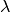
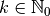
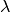
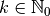
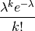

poisson_noise¶
-
odl.phantom.noise.poisson_noise(intensity, seed=None)[source]¶ Poisson distributed noise with given intensity.
- Parameters
- intensity
TensorSpaceorProductSpaceelement The intensity (usually called lambda) parameter of the noise.
- intensity
- Returns
- poisson_noise
intensity.spaceelement Poisson distributed random variable.
- seedint, optional
Random seed to use for generating the noise. For
None, use the current seed.
- poisson_noise
Notes
For a Poisson distributed random variable
 with intensity
, the probability of it taking the value
 is given by
with intensity
, the probability of it taking the value
 is given by
Note that the function only takes integer values.